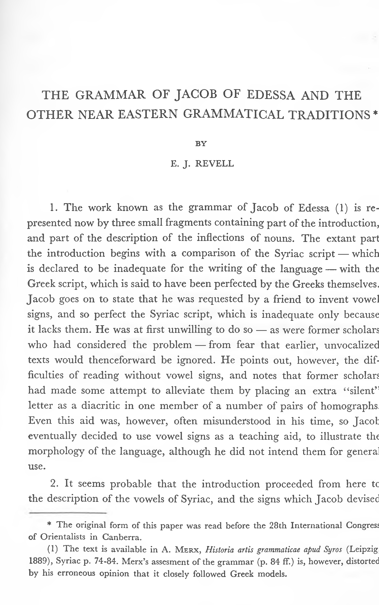

07a.09 The Grammar of Jacob of Edessa and the Other Near Eastern Grammatical Traditions part2
THE GRAMMAR OF JACOB OF EDESSA AND THE
OTHER NEAR EASTERN GRAMMATICAL TRADITIONS
BY
E. J. REVELL
Extrait de la revue Parole de l’Orient, Vol. Ill, N° 2, 1972
THE GRAMMAR OF JACOB OF EDESSA AND THE
OTHER NEAR EASTERN GRAMMATICAL TRADITIONS *
BY
E. J. REVELL
-
The work known as the grammar of Jacob of Edessa (1) is re presented now by three small fragments containing part of the introduction, and part of the description of the inflections of nouns. The extant part the introduction begins with a comparison of the Syriac script — which is declared to be inadequate for the writing of the language — with the Greek script, which is said to have been perfected by the Greeks themselves. Jacob goes on to state that he was requested by a friend to invent vowel signs, and so perfect the Syriac script, which is inadequate only because it lacks them. He was at first unwilling to do so — as were former scholars who had considered the problem — from fear that earlier, unvocalized texts would thenceforward be ignored. He points out, however, the dif ficulties of reading without vowel signs, and notes that former scholars had made some attempt to alleviate them by placing an extra “silent” letter as a diacritic in one member of a number of pairs of homographs. Even this aid was, however, often misunderstood in his time, so Jacob eventually decided to use vowel signs as a teaching aid, to illustrate the morphology of the language, although he did not intend them for general use.
-
It seems probable that the introduction proceeded from here to the description of the vowels of Syriac, and the signs which Jacob devised
-
The original form of this paper was read before the 28th International Congress
of Orientalists in Canberra.
(1) The text is available in A. Merx, Historia artis grammaticae apud Syros (Leipzig, 1889), Syriac p. 74-84. Merx’s assesment of the grammar (p. 84 ff.) is, however, distorted by his erroneous opinion that it closely followed Greek models.
366
E. J. REVELL
[2
to represent them, but, most unfortunately, the text breaks off at this point, and the signs occur only in the paradigns of noun forms. Eight vowel signs are used, designed as letters to be written as an integral part of the script, not, as in later systems, as an external addition to it. They are all the invention of Jacob (possibly inspired by the corresponding Greek letters) except for the sign for zqdfd, for which 'dlaf is used.
- The next section in the edition is misplaced, as it deals with nouns of several syllables, and nouns formed with various affixes, and should follow the paradigms of shorter noun forms, which are placed last in the edition (2). In his discussion of these longer noun forms, Jacob mentions the phenomenon of partial assimilation affecting the first member of certain consonant clusters. As a result of this we learn of Jacob’s classification of such consonants into three groups, “heavy, medium, and clear”. The remaining fragments of the grammar discuss the inflection of various classes of nouns. The nouns are classified according to the syllabic structure of the singular emphatic form of the noun, and the vowels characteristic of it.
- Jacob distinguishes three types of syllable: psitd (simple), mrakbd (compound), and "pipa (doubly compound), consisting of a vowel preceded by one, two, or three consonants respectively. Moberg showed that Merx was wrong in his claim that Jacob was copying the standard Greek classi fication of syllables, based on the length of the vowel and the number of consonants following it, but he still suggests, on the basis of the speculations of Steinthal, that Jacob’s classification was Greek in origin (3). This is
(2) British Museum MS Add. 17, 217 fol. 37 should follow fol. 38. The correct order of the grammatical material is, then, 1) BM MS Add. 17, 217, f. 38: inflection of nouns of structure CCVCV (where C is any consonant, V any vowel). 2) BM MS Add. 14, 665, f. 28: inflection of nouns of structure CCVCCV. 3) BM MS Add. 17, 217, f. 37: (a) inflec tion of nouns of much more complex structure (CVCVCCVCV, CVCCVCCVCV), including discussion of partial assimilation of consonants, (b) “Rules for 47 types of mas culine nouns of psitd type” (e.g. metragsdnd). (c) The beginning of a discussion of nouns of the ‘eltdnd type; i.e. nouns which are formed by the addition of the suffixes —nd, —yd, or —ndyd to a base which is itself used as a noun (which is not the case in nouns of the psitd type formed in this way).
(3) A. Moberg, in Buch derStrahlen (Leipzig, 1913) p. 103*, referring to H. Steinthal, Geschichte der Sprachurissenschaft bei den Griechen und Romern, Vol. I (Berlin, 1890), p. 256, who is clearly speculating without concrete evidence.
3]
THE GRAMMAR OF JACOB OF EDESSA
367
typical of the general attitude, which regards the Syrian grammarians as mere imitators, copying first the Greeks, then the Arabs, and unworthy of their own place in the history of language study. It seems to me most likely that Jacob’s classification of syllables, like his nomenclature, was native to Syria. It is clear from the treatise on metrics published by Martin, that a standard method of determining the number of syllables in a line of poetry was by counting the vowels, a system which would easily lead to the idea that the syllable boundary followed the vowel (4).
- That Jacob of Edessa was influenced by Greek ideas is, of course, undeniable. He used them wherever he could, but he used them as tools, not as blueprints, adapting them to his own purposes wherever necessary. His classification of the consonants is an excellent example of this. The grouping “heavy — medium — clear” was undoubtedly inspired by the Greek classification “rough — intermediate — smooth”. In the Greek classification, however, the voiced stops are “intermediate”, whereas for Jacob they are “heavy”, and the voiceless stops are “medium”. The original basis of the Greek classification was aspiration. Their voiceless stops pi, tau, and kappa, were unaspirated, and therefore “smooth”. The homorganic group phi, theta, and chi, were heavily aspirated, and so “rough” while the voiced stops were lightly aspirated, and so “intermediate”. Long before Jacob’s time, however, the two groups of aspirates had become fricatives (5). The Syrian begad-kefat letters and the corresponding “em- phatics” must have represented sounds quite similar to these Greek ones. Transliterations in the Talmud and Midrash, and other contemporary sources, show that the Aramic-Hebrew begad-kefat letters never represented stops in any position, but fricatives, (or possibly affricates), while the “emphatics” represented voiceless stops (6). Bar-Hebraeus gives definite evidence that, in his time, some, at least, of the begad-kefat letters still represented fricatives or affricates, whether marked with rukkâkâ or qussâyà,
(4) See Abbé Martin, “De la métrique chez les Syriens” (Abhandlungen für die
Kunde des Morgenlandes 7, Nr. 2, 1879), p. 18 and note 1.
(5) See E.H. Sturteyvant, The Pronunciation of Greek and Latin (2nd ed., Philadel
phia 1940), no. 92 (p. 83 ff.).
(6) See Altheim-Stiehl, Die Araber in der alten Welt, Bd. 3 (Berlin, 1966), p. 39 ff.
368
E. J. REVELL
[4
and this may have been true of all (7). Similar evidence can be found in earlier grammars (8). For Bar-Hebraeus, the “emphatics” were still voice less stops. Consequently, for Jacob of Edessa, the begad-kefat letters and their corresponding “emphatics” must have represented two sets of fricatives and a corresponding set of voiceless stops, just as did the nine Greek4 6mutes”. The traditional Greek classification in Jacob’s time, however, ran 4 6smooth” — voiceless stops, 66intermediate” — voiced fricatives, and 66rough” — voiceless fricatives. Jacob used this framework for the classification of the similar Syriac sounds, but rearranged it to get a more logical order: 66light” — voiceless stops, 66medium”—voiceless fricatives, and 66heavy” — voiced fricatives.
- It is thus quite clear that Jacob was not describing the Syriac language in terms of Gieek categories, but adapting Greek ideas to the description of Syriac grammar. This alone should gain his grammar a place in the history of language study, but, in addition to this, it shows a feature so remarkable as to set it off not merely from the Greeks, but from any other Near Eastern grammar known. The work is based entirely on the sounds of the language, not on the written form. Jacob’s reliance on sound is evident throughout the work. His treatment of 66silent” letters as diacritics, and his use of 'dlaf as a vowel sign, both show that he was in no way bound by the written form, and his treatment of the partial assimilation of consonnants, which was never represented in writing, shows his interest in the sounds of the language. More important than this, however, is his classification of nouns, which is based entirely on sound.
(7) This is most clear in the case ofpe and gomal, cf. inter alia Abbé Martin in Journal Asiatique, 6e série, tome 19, 1872, p. 379. No distinction is, however, made in this respect between, e.g. pe qussâyà, which was clearly fricative, and beth qussâyâ, about which we have no direct evidence.
(8) Various sources refer to the three sounds represented by pe. The first two (repre sented by pe with rukkâkâ or with qussaya) are native to Syriac, and are both fricatives : “soft” and “medium” according to Elias of Tirhan (See Syrische Grammatik des Mar Elias von Tirhan, ed. F. Baethgen, Leipzig 1880, Syriac p. 34). The third (“hard” and “plosive” according to Elias) is the “Greek pe״, which occurs only in loanwords, and is clearly a stop. Jacob of Edessa had already found it necessary to create a special sign to represent this sound.
5]
THE GRAMMAR OF JACOB OF EDESSA
369
-
In Jacob’s classification, nouns of the same syllable structure and vowel pattern are put in the same class. This classification is used throughout, including cases in which differences in plural form are predictable from the singular, even though the main purpose of this section is to describe plural forms. Thus in canon 28 he says “Nouns of this class, if they contain taw, (i.e. the feminine gender marker) are pronouced in the plural as trisyllabic, with one ce’ and two ‘a’ vowels, as sbutd sebwdtd, etc., but if they have no taw, they follow the common rule of plural formation, as ‘bur a ‘bare.” Similarly, in canon 19, Jacob shows that he is perfectly well aware that Ibetd and similar nouns are derived from roots with a final nun, which appears in the plural form. Nevertheless he classifies them according to the spoken form, with other nouns CCeCd. There is other evidence that the spoken form is the only basis for classification, but this is most striking in Jacob’s discussion of the only form in canon 21. This is first described according to the written form, as having a “doubly compound” and a “simple” syllable, i.e. 'hri-td. Jacob then remarks that the root contains nun, so the word should be classed as having two “compound” syllables, as it is pro nounced in some dialects, i.e. hra-nta. In the Edessan dialect, however, it is pronounced hre-td, and so it is finally classified as having one compound and one simple syllable. Jacob of Edessa, then, has the distinction of having produced the only grammar known to us from the Near East which was based entirely on the spoken form of the language, an ironic fact in view of the neglect of the Syrians shown by modern historians of the study of language.
-
It is sufficiently surprising to a modern linguist to find that a gram mar based solely on the sounds of the language was produced in this period and area at all. What must be even more surprising, from this point of view, is that it bore no fruit. The approach to grammar through the spoken, rather than the written, form of the language has now become almost a conventional mark of grammatical enlightenment, even for students of dead languages. It seems scarcely conceivable that a culture which had actually achieved this pinnacle of grammatical evolution should deliberately have rejected it in favour of what is, to us, the immeasurably inferior approach through the written form. Yet this is clearly what
12
370
E. J. REVELL
[6
happened among the Syrians. Jacob of Edessa’s work was not isolated and unknown. Various later grammarians quote it with respect, including Bar-Hebraeus, who, indeed, uses many of the same examples as Jacob in his discussion of the inflection of nouns. However he no longer uses Jacob’s simple phonological classification of noun forms, but a system based on the number of vowels, and the number of letters in the written form.
- This rejection of the approach to language through the spoken form is doubly surprising when we remember that not only the Syrian gram marians, but also those of the neighbouring languages — Arabic, Greek, and Hebrew — were strongly interested in the pronouciation of their languages, and achieved considerable accuracy and clarity in the analysis and description of speech sounds and their production. The Arabs were, of course, preeminent in this, but the Greeks were not far behind. Their culture turned the Jews into the most script-oriented of these language groups, but their grammarians were, nevertheless, perfectly well aware that there was nothing like a one-to-one relationship between the consonants of their speech and the letters of their writing, and they show a history of acute observation of speech sounds from Talmudic times one (9). As for the Syrians, we have already noted Jacob of Edessa’s interest in pro nunciation, and other grammarians actually define grammar as concerned with spoken language (10). As far as ability goes, it is possible that the distinguishing of eight vowels by Jacob of Edessa was, in terms of phonemes, overdifferentiation, and this is even more likely for the somewhat different analysis of Bar-Hebraeus, but there is no reason to doubt the phonetic validity of these analyses. In his description of the consonants of Syriac, Bar-Hebraeus shows himself the equal of the Arabic grammarians. He is,
(9) The Taimuds discuss variations in the pronunciation of consonantal sounds, and the later pointing systems give evidence of a detailed analysis of vowel sounds. Saadya Gaon (died 942) distinguished 42 different sounds in spoken Hebrew, including 35 conso nants; more than half as many again as the number of actual letters (22), although no doubt not all of these were phonemic in the modern sense. See the quotation by Déren- bourg in Journal Asiatique, 6e série, tome 16 (1890), p. 515 f.
(10) E.g. Elias of Tirhan “The purpose of grammar is that we speak correctly”
(op. cit., Syriac p. 4), and Bar-Hebraeus quoted below.
7]
THE GRAMMAR OF JACOB OF EDESSA
371
of course, copying them, but individual features, e.g. in his description of lamad, suggest that he is copying their techniques, not their descriptions. 10. It is clear, then, that the scholars of the Near East had both the interest in speech sounds, and the skill in technical description, necessary for the development of Jacob’s approach to grammar through the sounds of the language. That they did not develop it can only mean that this approach was, to them, inferior to the approach through the written form, despite their insistence on correct pronunciation. The reasons for this merit some investigation.
-
It is, of course, true that grammatical study was confined to literary language. According to Dionysios of Thrax (whose work was translated and studied by the Syrians), “Grammar is the knowledge of the usages of language as current among the poets and prose writers” (11). A millenium later, Bar-Hebraeus wrote “Grammar is the knowledge from which rules are learned, by the observation of which one may avoid errors of speech in literary language” (12). The Arabs, who might be considered an ex ception, were interested in the speech of the Beduin only insofar as it was regarded as exemplifying literary language (13). Vernacular dialects were, of course, known to exist, and are occasionally attested in literary sources, but the only dialect forms which the Near Eastern grammarians record with any interest are those of other acceptable literary dialects.
-
It would, however, be perfectly possible to study a literary language in terms of sound rather than of writing. It is clear that the literary languages were thought of as spoken. They must also have been passed on orally, at least to a very large extent, and thus might well have been described by grammarians solely in terms of sound (14). The Indian grammatical
(11) See G. Uhlig, ed. Grammatici Graeci, part I, vol. I (Lipsiae 1883), p. 5. (12) A. Moberg ed., Le livre des splendeurs (Lund, 1922), p. 2-3. (13) See G.Rabin, Ancient West Arabian (London, 1951), chapter 2, especially section v. (14) Gf. e.g. Elias of Tirhan who says, separate signs for the “weaker” pronunciation of the begad-kefat letters were never developed as “It is sufficient that pupils learn from their teachers in actual recitation (qerydna) that these letters are sometimes to be pronounced weaker and sometimes not, and that this should be carried on entirely without written tradition” (op. cit., Syriac p. 37). Such traditional forms of education are still, of course, widely used.
374
E. J. REVELL
[10
to preserve it and hand it on unchanged. The grammars produced were thus always basically prescriptive in intent, and, since preservation of a uniform and exact pronounciation was not of importance to the culture, the approach to the language through the written form, supported by a well-maintained oral tradition and a sufficiently detailed writing system, was perfectly adequate, and much simpler than the approach through sound. In contrast, modern grammatical study is mainly concerned with vernacular language. It is, at least in its early phases, descriptive in intent. The readers of the grammar, and often the writer, are not native speakers, and therefore cannot refer to a common oral tradition, and such vernaculars usually lack an adequate writing system. Nevertheless, pronunciation is required to be correct within narrow limits. Consequently, the approach to the language through the sound system is the most efficient.
- That the approach to language through sound was never developed in the Near East is clearly a matter of cultural values, not of blind adherence to a writing system, or of lack of technical ability. That Jacob of Edessa based his grammar on sound is, no doubt, partly due to the fact that he had to produce his own vowel signs, and so was forced to perform the initial task of collection and analysis of forms in terms of sound. In part, however, it is the mark of a great mind, which saw that sound, and not writing, was the essence of the language.
